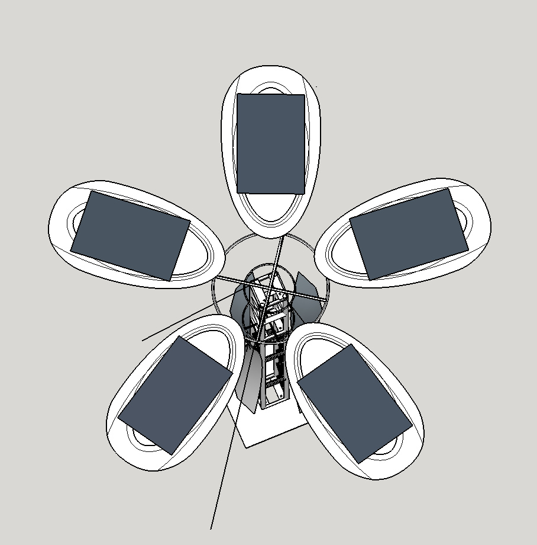
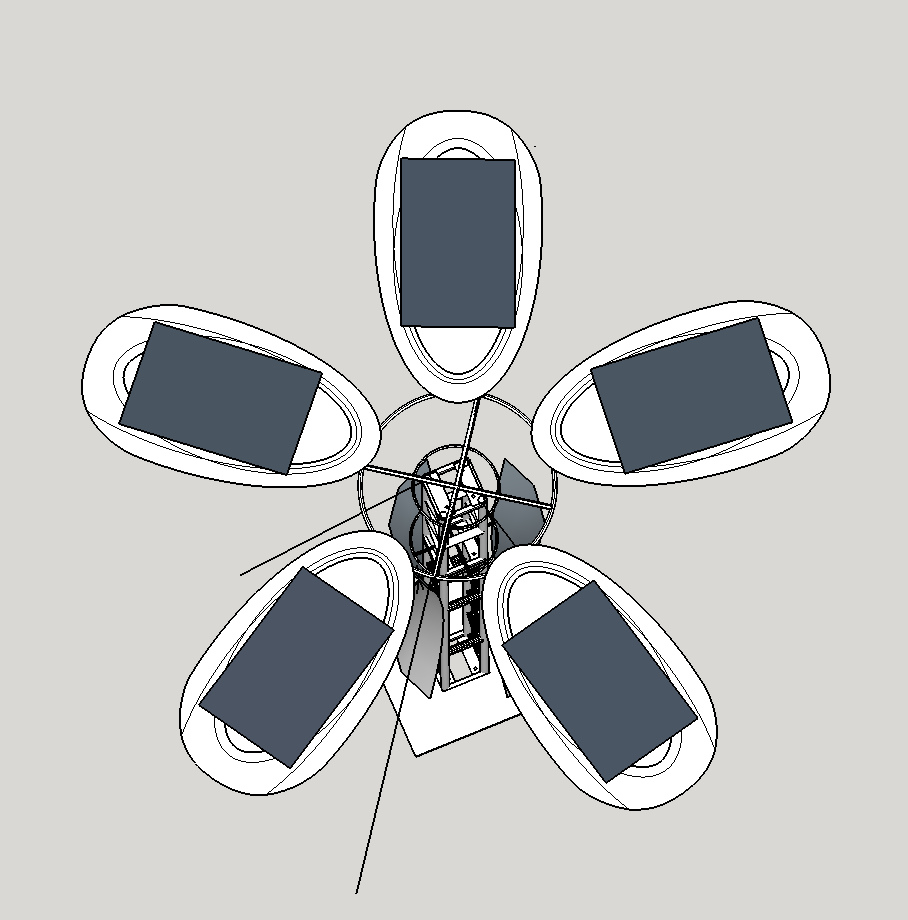

The Solar Sunflower Project - Electric Sky Edition
The Solar Sunflower we are building for Electric Sky is a 500 watt solar generator. It stands 12' tall with five flower petals on top.
Each of the five petals have
- 1 x 100 Watt Residential Solar Panel
- 50 Pixel LEDs
- 1 x 400 pound force linear actuator
- 1 x Arduino Uno with...
- 10A DC Motor Sheild
- 2 ACS712 current sensors for measuring drain and supply current
The Arduinos live in a common utility box (not pictured) at the base of the towers. The five Arduino Unos communicate will communicate (slave) with a Raspberry PI (master) over I2C. The Raspberry has a clock and a programmed cycle.
In the morning (~8am) the Raspberry will instruct the petals to run a calibration sequence and analyze the results. It will then instruct the petals to go into autonomous seek mode in which they will independently seek to the source of the most power being produced.
At dusk the Rasberry will instruct all petals to fully extend (close) and enter a rest period.
At dark (~10) the flower will power up in display mode; open petals and run sequenced lighting through the 50 pixel LEDs on each petal.
At midnight the flower will again close and go into rest.
Cables run through the center of the tower.
 
